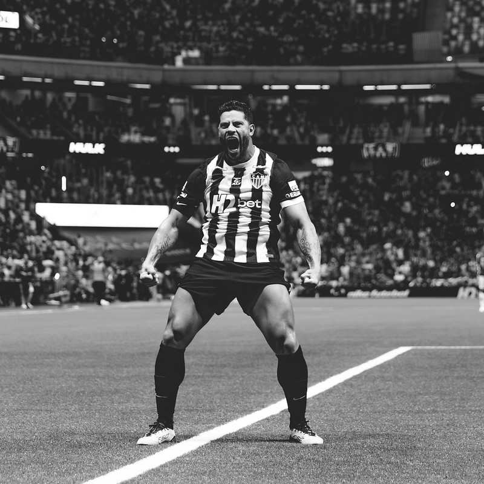

About Us

Clube Atlético Mineiro was founded on March 25, 1908, in Belo Horizonte by a group of young students who wanted to create a football club open to people from all social backgrounds. Originally called “Athlético Mineiro Football Club,” the team was formed during a period when football was still growing in Brazil. Unlike some clubs at the time that were linked to elite groups, Atlético quickly became known as a club of the people. In its early years, the team gained local recognition by winning state championships in Minas Gerais, laying the foundation for what would become one of Brazil's most historic and passionately supported football clubs.
Clube Atlético Mineiro is one of Brazil's most historic and popular football clubs, based in Belo Horizonte, Minas Gerais. Founded in 1908, it is known for its passionate fanbase, nicknamed the “Galo” (Rooster), and for its black-and-white striped kits. Atlético Mineiro has a rich history in Brazilian football, winning multiple national championships, state titles, and international competitions, including the Copa Libertadores. The club is celebrated for its attacking style of play and has produced many talented players who have shined both domestically and internationally. Beyond football, Atlético Mineiro holds a strong cultural presence in Minas Gerais, symbolizing pride and passion for the sport.
We have been home to some of Brazil's most iconic footballers. The club's greatest legend is Reinaldo, widely regarded as one of the most talented strikers in Brazilian history and a symbol of the team in the 1970s. Another historic figure is Ronaldinho, who played a key role in Atlético's 2013 Copa Libertadores triumph, bringing global attention back to the club. That same golden era featured stars like Diego Tardelli, a prolific forward, and Victor, whose crucial saves were vital to their continental success. Together, these players helped cement Atlético Mineiro's reputation as one of Brazil's most passionate and successful clubs.